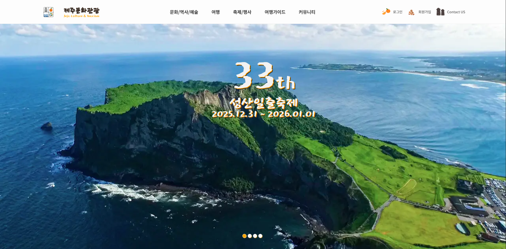
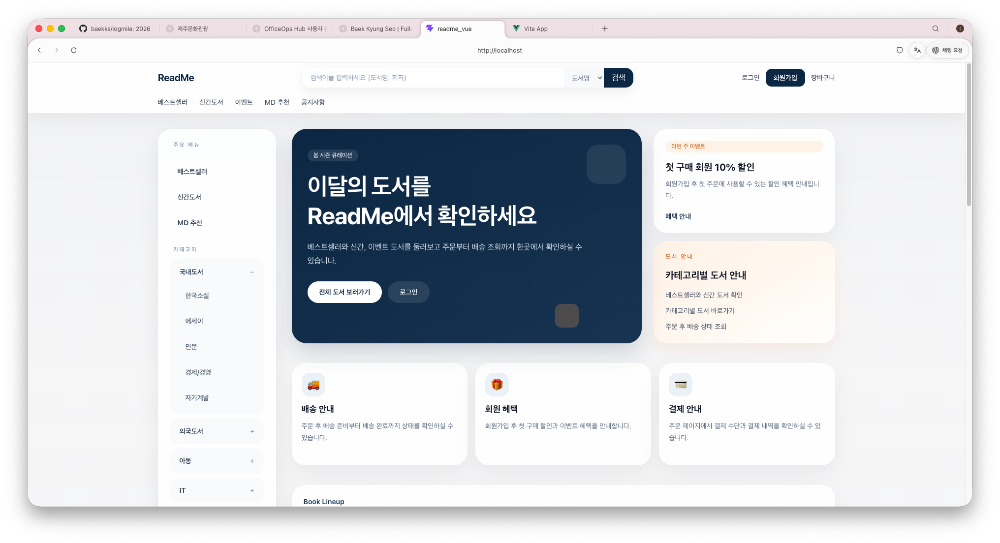
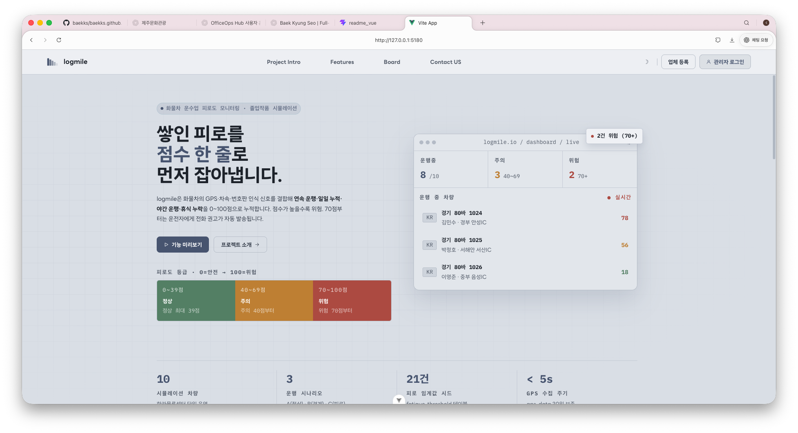
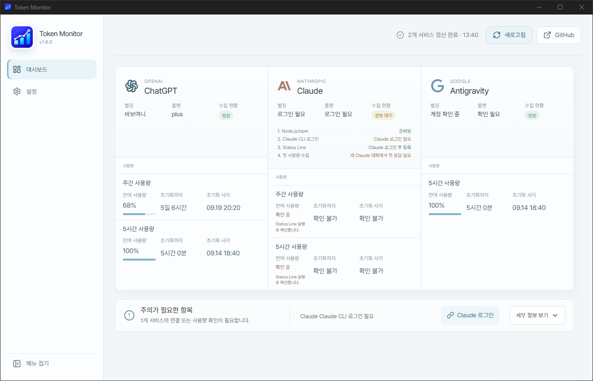

제주 문화관광 페이지
관광지 탐색부터 회원 인증, 리뷰와 문의까지 이어지는 문화관광 안내 서비스입니다.
인증과 사용자 참여 흐름
상세 보기문화관광, 온라인 서점, 모빌리티 모니터링과 개인 도구를 만들며 화면과 데이터가 연결되는 과정을 경험했습니다.

관광지 탐색부터 회원 인증, 리뷰와 문의까지 이어지는 문화관광 안내 서비스입니다.
인증과 사용자 참여 흐름
상세 보기
도서 조회, 장바구니, 주문과 주문 내역으로 이어지는 구매 과정을 구현한 온라인 서점입니다.
Vue 화면과 구매 상태 관리
상세 보기
주행 상태를 수집하고 이상 상태를 판단해, 화물차 운전자 피로도를 모니터링하는 플랫폼입니다.
분석 API와 모니터링 연결
상세 보기
여러 AI 개발 도구의 플랜, 잔여 사용량과 초기화 시간을 한 화면에서 확인하는 개인용 대시보드입니다.
개인 사용 흐름과 데스크톱 UI
상세 보기Java, Spring Boot, Vue를 학습하며 백엔드 API, 화면 구현과 데이터 저장 흐름을 함께 익혔습니다.
기능 단위 작업, 브랜치와 커밋 관리, Pull Request, README 정리와 구현 기능 공유를 경험했습니다. Notion과 Figma로 협업 기록을 남겼습니다.
Docker Compose로 애플리케이션과 데이터베이스 실행 환경을 분리하고 실행·배포 과정을 정리했습니다.
TokenMonitor처럼 실제로 필요한 사용 흐름에서 프로젝트를 기획했습니다. AI 도구는 설계 검토, 코드 리뷰와 디버깅 보조에 활용합니다.
Java, Spring Boot 3, Spring Security, JWT, JPA, FastAPI
API와 인증 흐름 구현HTML5, CSS3, Vue 3, Pinia, Thymeleaf, Vite
화면 구성과 상태 관리PostgreSQL, Docker, Docker Compose, AWS
데이터 저장과 실행 환경 구성GitHub, Notion, Figma
작업 흐름과 구현 기록 공유Codex, Claude, Antigravity
설계 검토, 코드 리뷰, 디버깅 보조게임공학과
현 한국공학대학교
[에스트래픽] 과정
MBC 아카데미
전 정보처리기능사
한국산업인력공단
신입 풀스택 웹 개발자로 팀의 서비스와 사용자 경험에 기여할 기회를 찾고 있습니다.